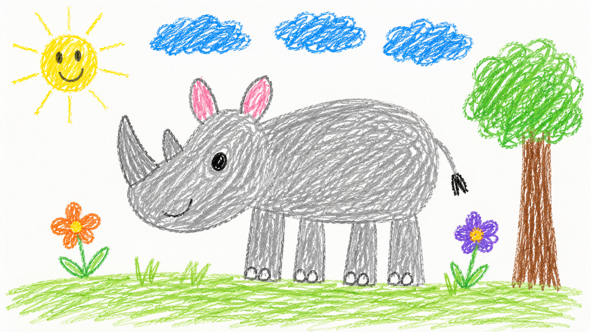
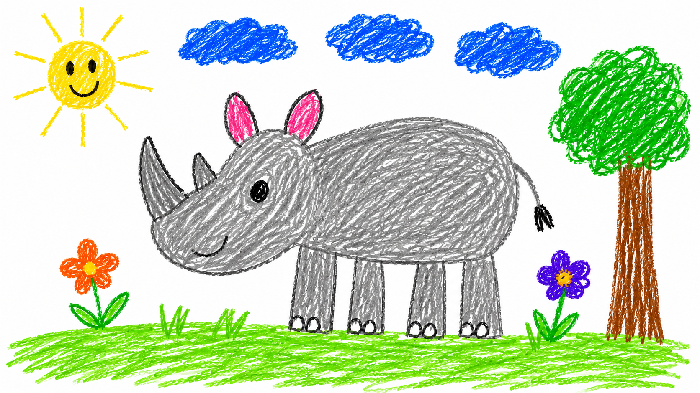

Промтзилла
Как оживить детский рисунок с помощью нейросети
Два шага: сначала подготовь рисунок в Nano Banana PRO, затем оживи его в Kling. Готовые промты для каждого этапа — RU и EN.
📋 Пошаговая инструкция
- 1Сфотографируй или отсканируй детский рисунок — хорошее освещение, без теней
- 2Перейди на study24.ai, открой Nano Banana PRO, загрузи фото рисунка
- 3Скопируй промт из Шага 1 ниже, вставь и отправь — получишь подготовленный рисунок
- 4Скачай результат и загрузи его в Kling (klingai.com)
- 5Скопируй промт из Шага 2 ниже, вставь в Kling и запусти генерацию
- 6Скачай готовое видео и поделись в соцсетях
Шаг 1 — Подготовка рисунка
Nano Banana PRO
Study AI · загрузи рисунок

ДоИсходный рисунок

ПослеПодготовленный рисунок
RU
На входе — детский рисунок (фото или скан). Подготовь его для анимации в видеогенераторе. Что сделать: — Фон сделать чисто белым, убрать тени и мятые края листа — Линии рисунка сделать чёткими и контрастными, но сохранить детский стиль — не выравнивать, не сглаживать — Цвета усилить и сделать насыщеннее, чтобы при анимации они выглядели ярко — Убрать пятна, грязь, следы карандаша за пределами рисунка — Сам рисунок (персонаж, объекты) не изменять — только фон и качество — Не добавлять новые элементы, тени, блики или текстуры
EN
Input is a children's drawing (photo or scan). Prepare it for animation in a video generator. What to do: — Make the background pure white, remove shadows and crumpled paper edges — Make the drawing lines sharp and contrasty, but preserve the childlike style — do not straighten or smooth — Boost colors and make them more saturated so they look vivid during animation — Remove stains, dirt, pencil marks outside the drawing area — Do not alter the drawing itself (character, objects) — only clean the background and improve quality — Do not add new elements, shadows, highlights or textures
Шаг 2 — Оживление видео
Kling
klingai.com · загрузи подготовленный рисунок
РезультатОживлённый рисунок — Kling
RU
На входе — детский рисунок. Оживи его, сохранив оригинальный стиль рисунка полностью. Движение: персонаж начинает двигаться естественно — моргает, дышит, слегка покачивается. Стиль анимации: мягкий, плавный, как в детском мультфильме. Фон: если есть фон на рисунке — он тоже оживает (облака плывут, трава колышется, вода рябит). Цвета: сохранить точно как в оригинале, не улучшать и не насыщать. Линии: сохранить детскую неровность линий — не сглаживать, не делать «профессиональными». Атмосфера: тёплая, добрая, сказочная. Длительность: 3–5 секунд, зацикленная анимация. Не добавлять реалистичные текстуры, 3D-эффекты или фотореализм.
EN
Input is a children's drawing. Bring it to life while fully preserving the original drawing style. Motion: the character starts moving naturally — blinking, breathing, gently swaying. Animation style: soft, smooth, like a children's cartoon. Background: if there is a background in the drawing — it comes alive too (clouds drift, grass sways, water ripples). Colors: preserve exactly as in the original, do not enhance or oversaturate. Lines: keep the childlike uneven lines — do not smooth or make them look professional. Atmosphere: warm, kind, fairytale-like. Duration: 3–5 seconds, looped animation. Do not add realistic textures, 3D effects or photorealism.
Теги
Эту страницу можно использовать онлайн: промпт подходит для работы с ИИ и нейросетью.